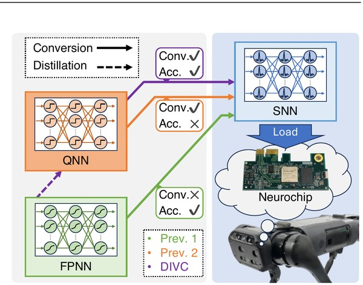

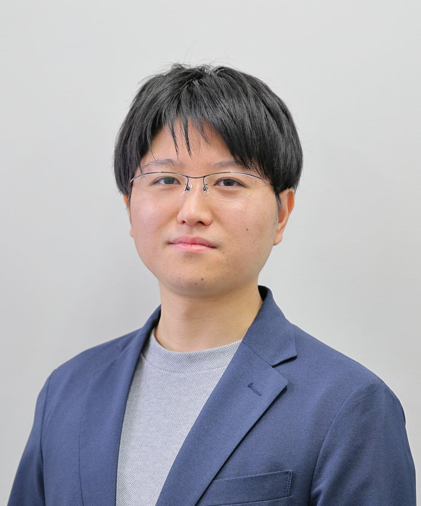
Sim-to-Real Reinforcement Learning for Robotics
I am a researcher in reinforcement learning (RL), deep learning, and robotics. My research focuses on Sim-to-Real transfer — how robots can learn in simulation and operate in the real world — using methods such as domain randomization, policy distillation, and sample-efficient reinforcement learning. I have worked on real-world robotic tasks including manipulation, legged locomotion, multi-robot systems, and field and industrial robotics.

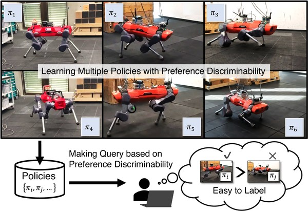

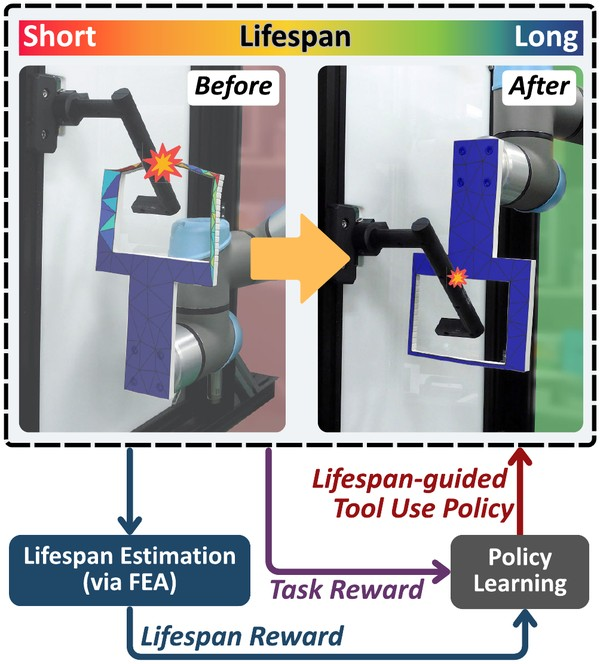
IEEE Access, 2026
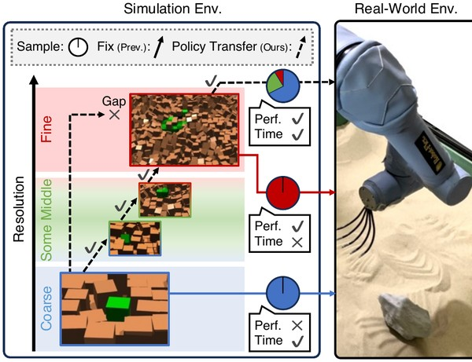

IEEE Transactions on Automation Science and Engineering (T-ASE), 2025
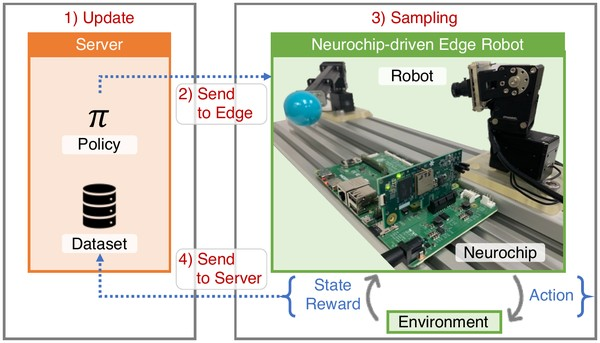

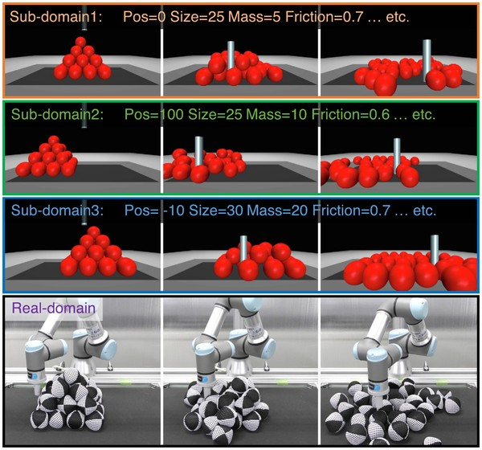

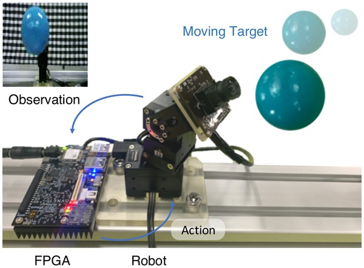

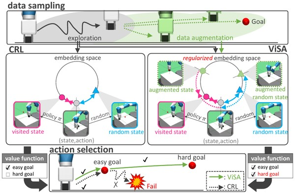
Under review
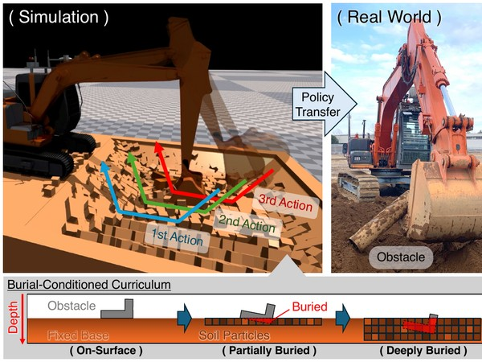

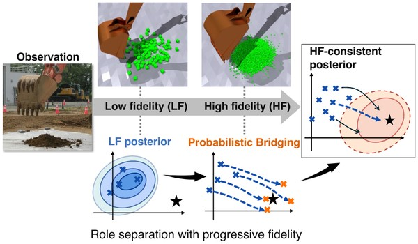
Under review
IEEE International Conference on Robotics and Automation (ICRA, T-ASE option), 2026
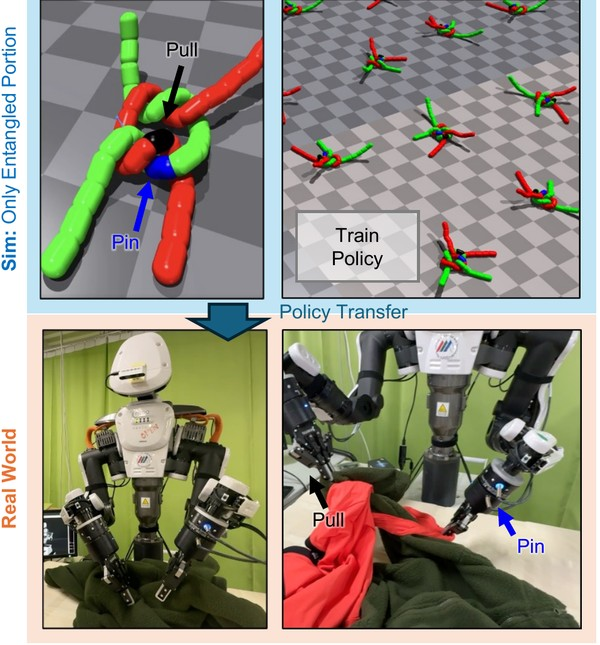

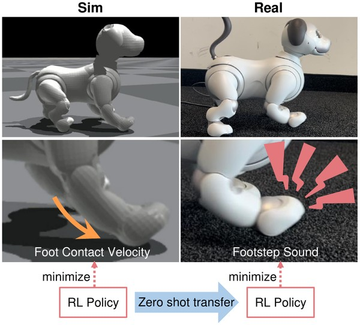

International Conference on Robotics and Automation (ICRA), 2025
International Symposium on Artificial Life and Robotics (AROB), 2025
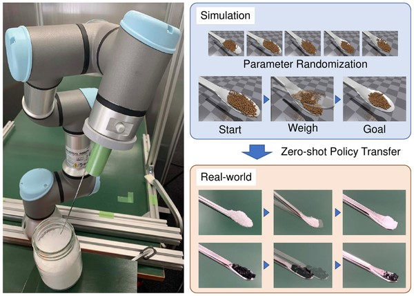

IEEE/RSJ International Conference on Intelligent Robots and Systems (IROS), 2023
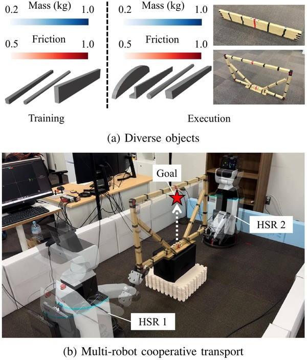

Annual Conference of the Robotics Society of Japan, 2024
計測自動制御学会 自律分散システム・シンポジウム, 2026